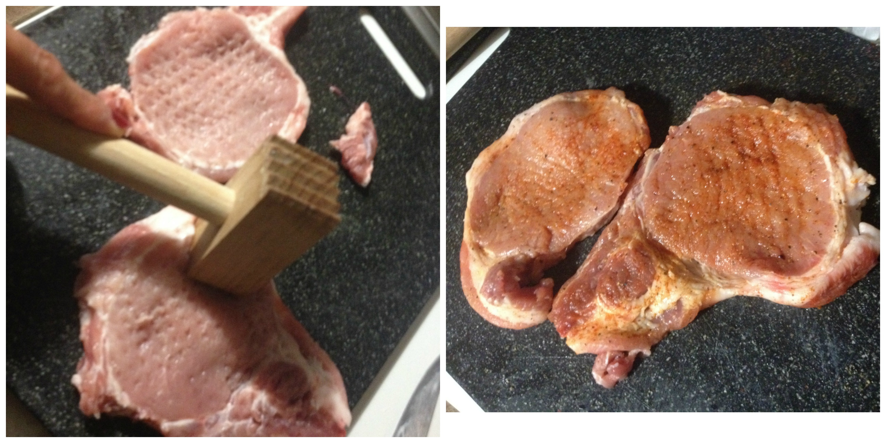
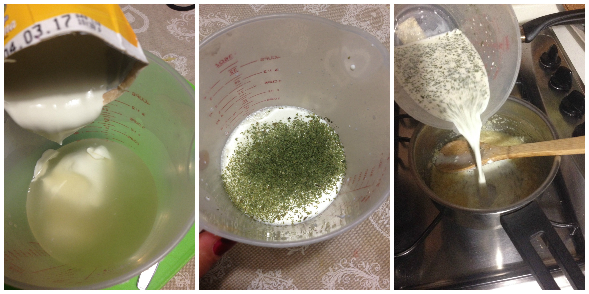
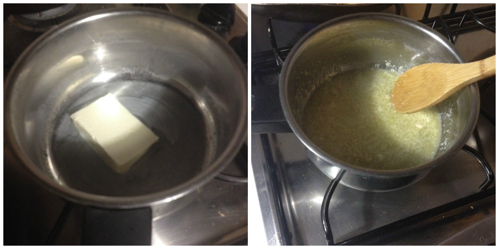
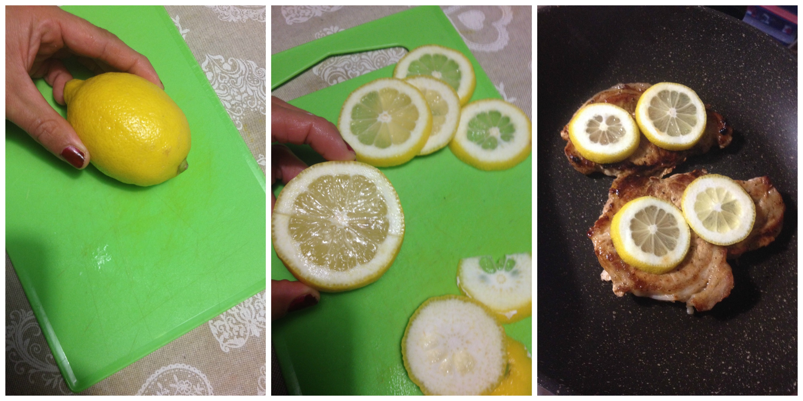
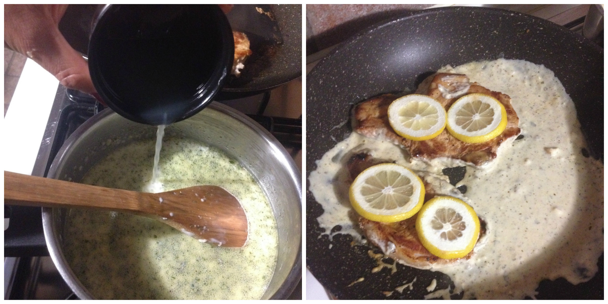

Pork Chops with lemon cream¶
- Serves: 2
- Type: main
Note¶
This is a nice recipe to try especially when you want to vary that usual herbs pork chops :)
Ingredients¶
Meat:
- 2 pork chops
- Salt and pepper to taste
- 1 teaspoon ground paprika
- 1 teaspoon ground garlic
- 1 tablespoon of Oil (in case you do not have a grease free skillet pan)
Sauce: - 2 tbs butter - 4 garlic cloves - 100 ml chicken broth - 100 ml cream (I used sour cream) - 1 teaspoon dry parsley - Juice of a lemon - Salt and pepper to taste
Steps¶
Prepare the pork chop, I used to beat the meat to soft it and to break the fiber.
Sprinkle the chops with salt, pepper, the paprika and the garlic
Beat and season the meat with all the spices
Stir fry the pork chops for both sides and cook with moderate heat.
Sauce: #. Chop the garlic cloves #. Slice the lemon #. Squeeze the lemon and set aside #. Mix in a bowl or measuring pitcher the chicken broth, the cream and the parsley

Melt the butter and stir fry the garlic cloves, be careful, they do not have to burn.
Pour the liquids mix into the melted butter and let it boil stirring continuously, when the sauce is boiling add the lemon juice and stir to thicken for a few seconds
Pour the sauce to the pork chops, keep on the heat for a minute and then this simple plate is ready to serve

Can be served with¶
- grilled zucchini
- Sauté champignons
- green beans with garlic butter